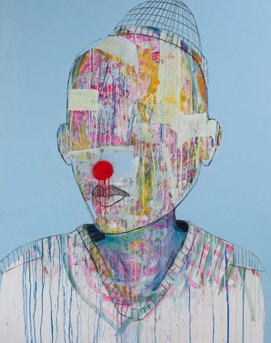

<div class="site-header text-white">
	<div class="flex-container min-h100vh">
		<div class="row min-h100vh">
			<div class="col-lg-6">
				<div class="header__content min-h100vh">
					<div class="header__top">
						
						<div class="white-line"></div>
						<div class="colection-version">
							<span class="colection-counter">1.0</span>
							<span class="colection-separotor">/</span>
							<span class="colection-counter">6</span>
						</div>
						<div class="arrow-left">
							<svg class="icon">
							  <use xlink:href="#arrow"></use>
							</svg>
						</div>
						<div class="arrow-right">
							<svg class="icon">
							  <use xlink:href="#arrow"></use>
							</svg>
						</div>
					</div>
					<div class="header__bottom">
						<div class="colection-version">
							<span class="colection-counter">1</span>
							<div class="white-line ml20"></div>
						</div>
						<h1 class="h1-title">RECONSTRUCTIONS OF A PAST STILL TO COME</h1>
					</div>
				</div>
			</div>
			<div class="col-1 df alg-item-center">
				<div class="header__image-descr">
							<p class="text-small">170x120 Spraypaint, Charcoal, Acrylic and Gesso on Canvas</p>
							<span class="image-title">‘Mounir Le Raisonnable’</span>
				 </div>
			</div>
			<div class="col-5">
				<div class="responsive-img h100">
					
				</div>
			</div>
			
		</div>
	</div>
</div>